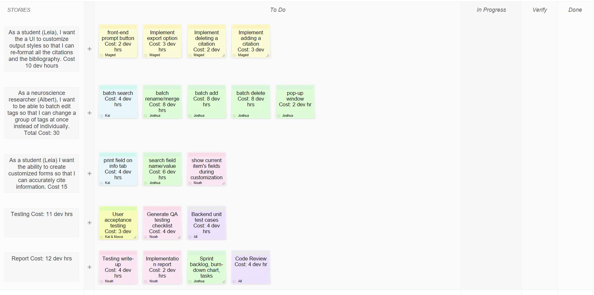
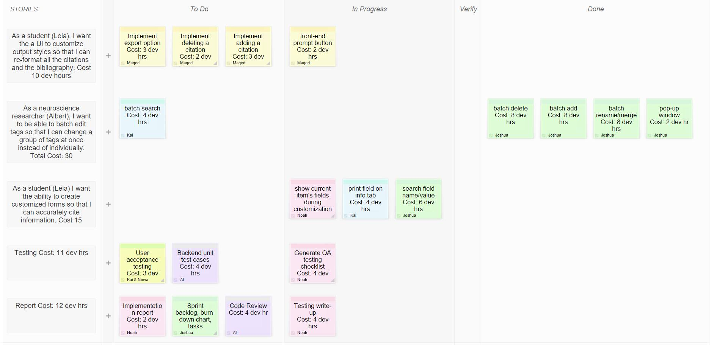
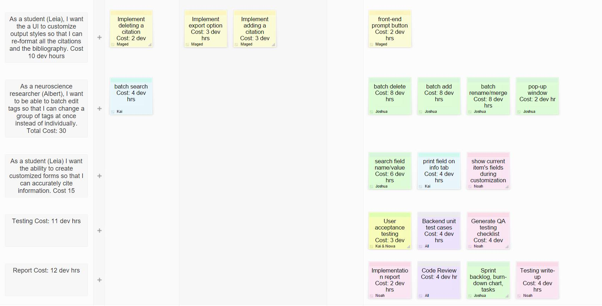
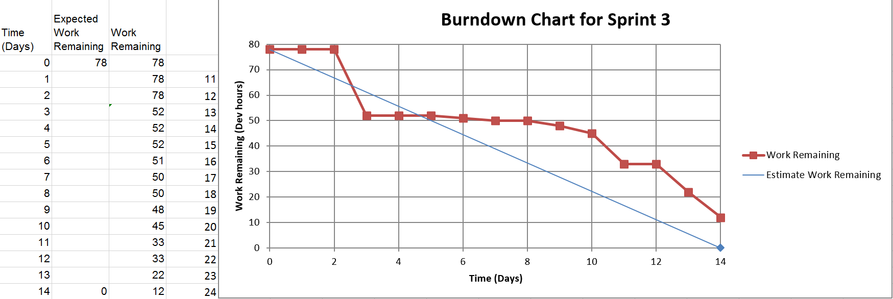

A user story is a tool used in Agile software development to capture a description of a software feature from an end-user perspective.
The user story describes the type of user, what they want and why.
A user story helps to create a simplified description of a requirement
As a researcher, I want the search result of tags to be case-insensitive so that I can locate files easier.
Albert
26DH
Value: 2
As a researcher, I want to be able to batch edit tags so that I can change a group of tags at once instead of individually.
I want to be able to batch rename a tag so that if I misspell a tag I don’t have to rename each tag individually. Cost: 4 dh
I want an interface to batch rename tags so that it is easier to rename the tags. Cost: 6 dh
I want to be able to batch delete tags so that I can remove a tag from several documents at once. Cost: 10 dh
I want to be able to merge tags together so that I can consolidate several groups of items together. Cost: 6 dh
Osip
20DH
Value: 2
As a research supervisor, I want the ability for changed group items to affect my local copy so that it automatically update my copy.
I want to merge local copy with group copy so that I don’t have to add the changes manually. Cost: 14 dh
I want to overwrite local copy with group copy so that if someone fixes spelling mistakes my local copy will be the copy with the mistakes fixed. Cost: 3 dh
I want to leave the local copy as it is so that if the new group copy has some incorrect information on it, it won't be added to my local copy. Cost: 3 dh
Leia
10DH
Value: 1
As a student I want the ability to create customized forms so that I can accurately cite information.
Leia
14DH
Value: 1
As a student, I want the a UI to customize output styles so that I can re-format all the citations and the bibliography.
Osip
11DH
Value: 3
As a research supervisor, I want make tag editing faster so that I can manage my tags more efficiently.
Osip
25DH
Value: 1
As a research supervisor, I want the ability to decide if I make changes to a linked document if will be synchronized with the online version so that the group can stay up to date.
Osip
8DH
Value: 1
As a research supervisor, I want to be able to save my customized output styles so that I don’t have to recreate them every time I want to use it.
Planning Game!
Product Backlog
In Scrum, the product backlog is the single most important artifact. The product backlog is, in essence, an incredibly detailed analysis document, which outlines every requirement for a system, project, or product
We chose to implement the user stories that had the highest priority for the first sprint because the magnitude of user demand affects our task priorities.
By starting with the high priority user stories, we can reduce risk by building on a more maintainable code through well-thought coding and testing.
Beginning

Midpoint

Endpoint

Burndown Chart
A burn down chart is a graphical representation of work left to do versus time. The outstanding work (or backlog) is often on the vertical axis, with time along the horizontal. That is, it is a run chart of outstanding work. It is useful for predicting when all of the work will be completed.

Current State of the Project
Sprint 3 Plan
Sprint 3
This week’s sprint consists of an additional new feature that allows users to customize the output of their citation. Users can select an item and right click the option of “add custom citation” to generate a customized citation format. The custom citation is evoked by right-clicking a reference item and selecting “Custom Bibliography.” From the drop-down, users can select any number of fields they need and wherever they need to produce the citation they want. Each field is initially denoted by a &(field_name_here) then can be converted to the field value by clicking “Fill in Bibliography.” Afterwards, users can customize the format as they can normally do in a common text editor, such as insertion of a new line, comma, etc. Once they are satisfied with the new format, users can click “Save” to save the new citation format to their local database. Once they come back to use Zotero again, they can simply click “Load” to retrieve the citation that they were working on.
The second introduced feature is batch tag editing. This feature is complete with the ability to batch add, rename, and delete existing tags. The feature was over-estimated due to the fact that we did not have an idea on how the existing Zotero manage their tags. However, after realizing the simplicity of their API. We used a lot of their code to infuse in our tag management implementation, and thus the sudden drop in our burnt-down chart. In regards to batch adding, users can multi-select different items which they want to add the tag to. And in regards to batch editing, users can multi-select the choices of tags by holding down the control button and pick out the tags that the user chooses to rename. However, one inconvenience involves needing to close the tag management window in order to see the updated change.
In addition to the new feature, another prime focus on this sprint is the implementation of various UX enhancement on our previous features.
Firstly, users can now search custom fields in the existing search bar. By clicking the checkbox to enable custom field search, users can type in entries of custom fields then the list of references with associated custom fields will filter according to the search input.
Secondly, users can now see their custom fields being shown on the “Info” tab. Previously, users had to right click a reference object to display current fields. That option still exist but it is definitely clearer to users when they browse through their items.
Third of all, when users want to manage their custom fields in the customizing window, they would have had a hard time seeing which field pertains to their current item and which does not. However, with the current organization, the problem is solved. Users can now clearly distinguish between current items’ fields and other items’ fields.
There were a few issues encountered during this sprint that took a long time to fix. First of all, searching for custom fields created issues in filtering the items. On clicking the checkbox to filter by custom field, searching is enabled and searches were successful, but afterwards unclicking to unfilter items did not work. In addition, there are issues on performing searches in full screen. Secondly, adding display of custom field to the “Info” tab had issues on full screen as well. You can see custom field disappearing when altering the screen mode. In addition, one minor issue is that there is a small lag upon browsing items to display the custom field in the “Info” tab.
In regards to branching, the relation below shows new corresponding additions:
customCitation:
new feature for users to generate customized citation output format
fieldImprove:
allow for users to see current field status during customization of their fields
allow users to see their custom fields within the “Info” tab